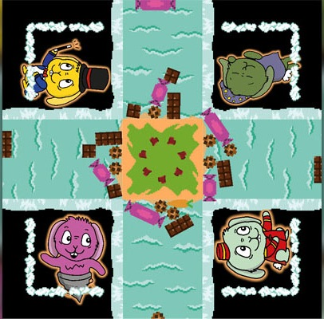

Hungry Rivers

Hungry Rivers is a cooperative tower stacking game inspired by "Tricky Towers" in which two or four players have to "build" their food towers. The difference is that the players play cooperatively. Each player has his ability which becomes useful in a tricky situation, so players are incentivized to communicate if they need a specific effect to help themselves.
This was a game for which we also build a top-down arcade. It can be disassembled and put anywhere for show. This game was a school group project with a team of 4. We used Unity and had around two months.